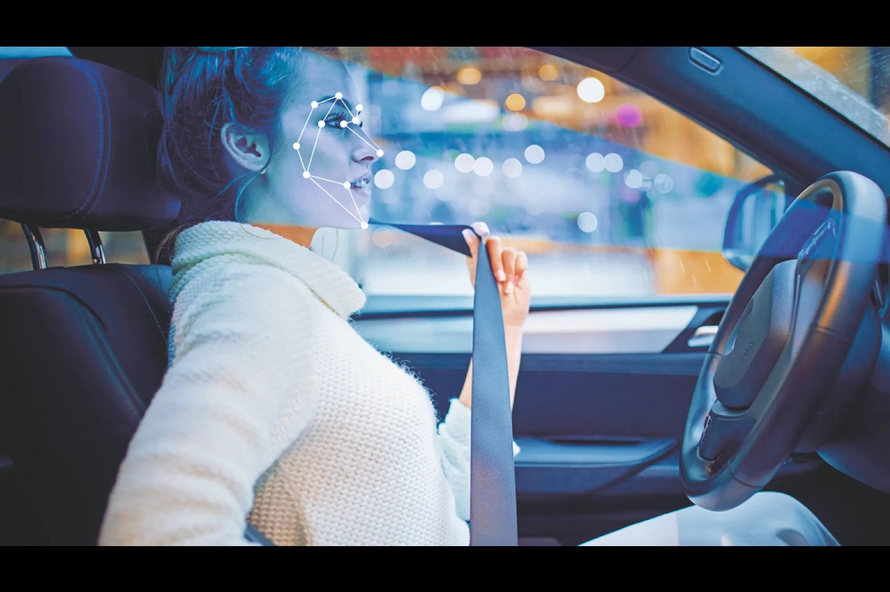
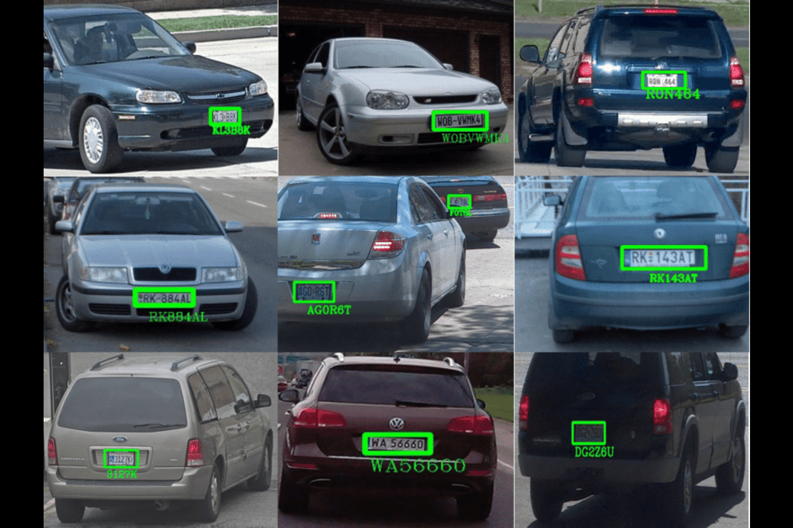
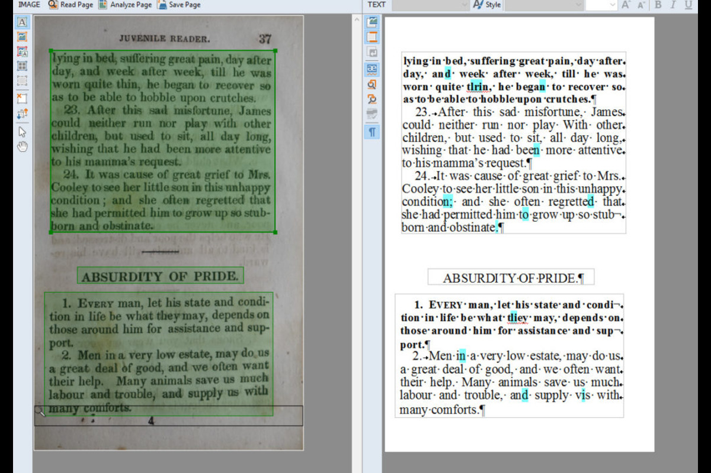
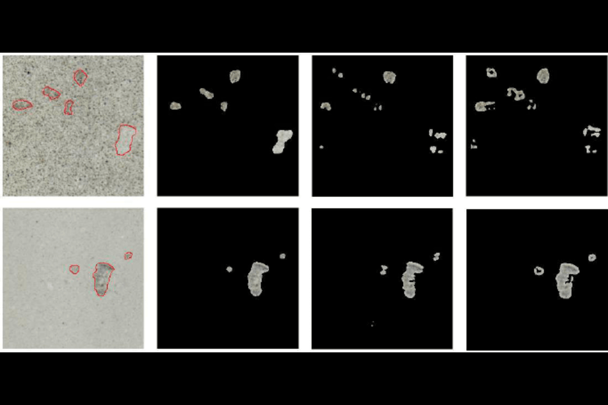

My Recent Projects
Here you can see some of the projects.


Lane Detection
Lane Detection for Autonomous Driving.

Segmentation for Autonomous Driving
Model Evaluation, Dataset Generation, Perspective Comparison, and Real-Time Capability

DMS
Driver Monitoring System

LPR | NPR
License Plate Recognition

OCR
Optical Character Recognition

Facial Attribute Analysis
Age/Gender/Emotion Recognition

Action Recognition
Recognize human action

Texture Defect Detection
Developed Fabric Defect Type Detection by automatically Focusing on Abnormal pixels.